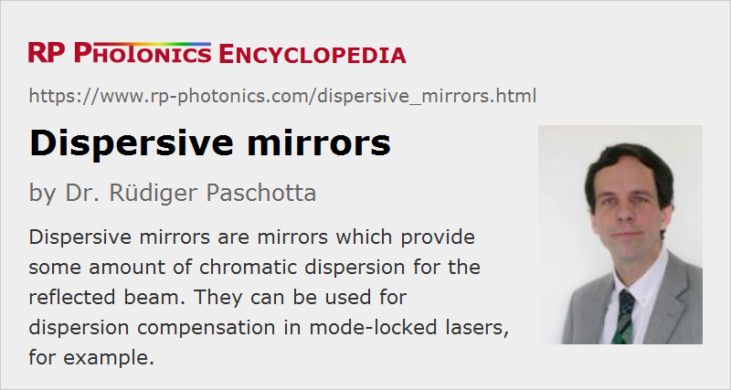

Dispersive Mirrors
Definition: mirrors which provide some amount of chromatic dispersion for the reflected beam
More general term: mirrors
German: dispersive Spiegel
Categories: general optics, photonic devices
How to cite the article; suggest additional literature
Author: Dr. Rüdiger Paschotta
Dispersive mirrors are mirrors – usually a kind of laser mirrors – which provide some amount of chromatic dispersion. They can be used for dispersion compensation within a laser resonator or for the compression of ultrashort pulses, for example, or for other applications in femtosecond laser optics and optical signal processing.
Usually, dispersive mirrors are made in the form of dielectric mirrors, and they can be based on different operation principles:
- Some simple designs are essentially realizing a Gires–Tournois interferometer, where the chromatic dispersion essentially results from interference effects at an off-resonant optical resonator. It is possible to obtain a large amount of chromatic dispersion (many thousands of fs2) of any sign, but only with a limited optical bandwidth. The higher the amount of chromatic dispersion, the more stringent is the limit for the optical bandwidth.
- A totally different operation principle is that of the chirped mirror, where the optical penetration depth is wavelength-dependent. According to a very simplified picture, the resulting chromatic dispersion can be explained as resulting from a wavelength-dependent path length. With proper optimization and precise growth of the dielectric structure, ultra broadband mirrors e.g. for octave-spanning titanium–sapphire lasers can be produced.
Apart from the amount of chromatic dispersion in the bandwidth, it is often important to achieve a high precision of the whole spectral dispersion profile. For example, one may use such mirrors for compensating even higher-order chromatic dispersion in the resonator of a mode-locked laser.
Usually, dispersive mirrors are highly reflecting. In case that there is any significant transmission, the chromatic dispersion for the transmitted light is generally totally different from the chromatic dispersion for the reflected light.
Compared with ordinary highly reflecting laser mirrors, which are generally designed as Bragg mirrors, dispersive mirrors exhibit tentatively higher parasitic losses (i.e., a somewhat lower reflectance) and the lower optical damage threshold. This results from the substantially deeper penetration depth into the dielectric structure. (See Figure 3 of the article on chirped mirrors.) The higher parasitic losses also imply a higher degree of thermal lensing on such mirrors, if they are used for high-power laser beams. With optimized high-power dispersive mirrors, however, thermal effects can be kept on the level which is quite low compared with those at other kinds of dispersive elements, e.g. prism pairs. Key aspects for such an optimization are the minimization of parasitic losses and the use of a mirror substrate material with a low thermal expansion coefficient and a high thermal conductivity.
If a simple reflection on a dispersive mirror does not provide sufficiently much chromatic dispersion, one may use multiple reflections, e.g. between two dispersive mirrors, where the two mirror surfaces are parallel to each other and non-normal incidence is used (see Figure 1). Note that the angle of incidence should not be too large, because the chromatic dispersion depends on that angle. Obviously, the total power losses and the total strength of thermal lensing scale with the number of reflections.
Sometimes, a matched pair of two different dispersive mirrors is used, where the dispersion errors of both mirrors are partially compensated.
Suppliers
The RP Photonics Buyer's Guide contains 16 suppliers for dispersive mirrors. Among them:
Questions and Comments from Users
Here you can submit questions and comments. As far as they get accepted by the author, they will appear above this paragraph together with the author’s answer. The author will decide on acceptance based on certain criteria. Essentially, the issue must be of sufficiently broad interest.
Please do not enter personal data here; we would otherwise delete it soon. (See also our privacy declaration.) If you wish to receive personal feedback or consultancy from the author, please contact him e.g. via e-mail.
By submitting the information, you give your consent to the potential publication of your inputs on our website according to our rules. (If you later retract your consent, we will delete those inputs.) As your inputs are first reviewed by the author, they may be published with some delay.
See also: chromatic dispersion, dispersion compensation, Gires–Tournois interferometers, chirped mirrors, laser mirrors, pulse compression
and other articles in the categories general optics, photonic devices
|  |
If you like this page, please share the link with your friends and colleagues, e.g. via social media:
These sharing buttons are implemented in a privacy-friendly way!